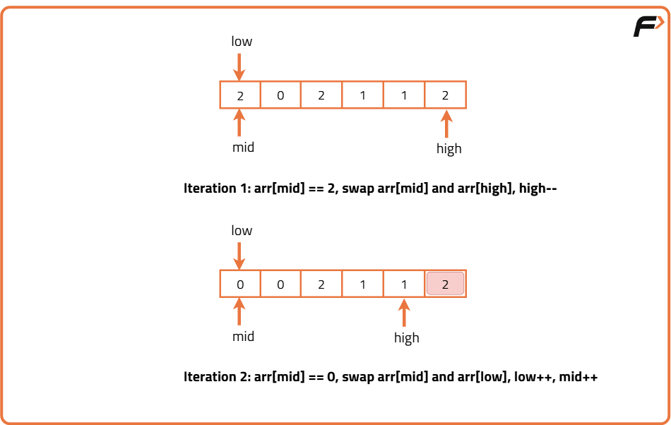
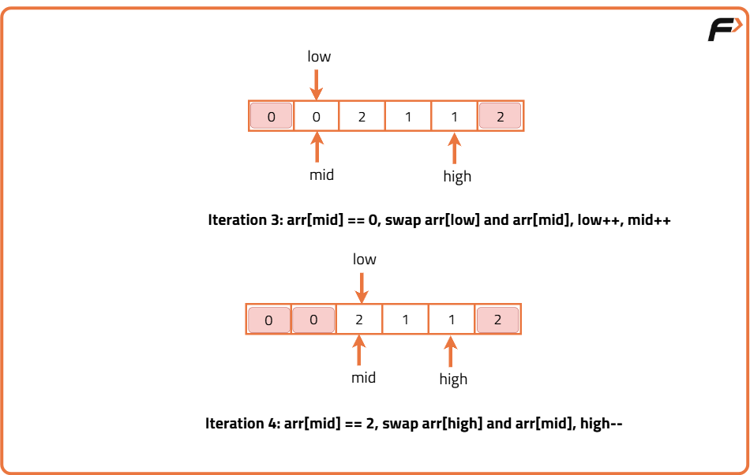
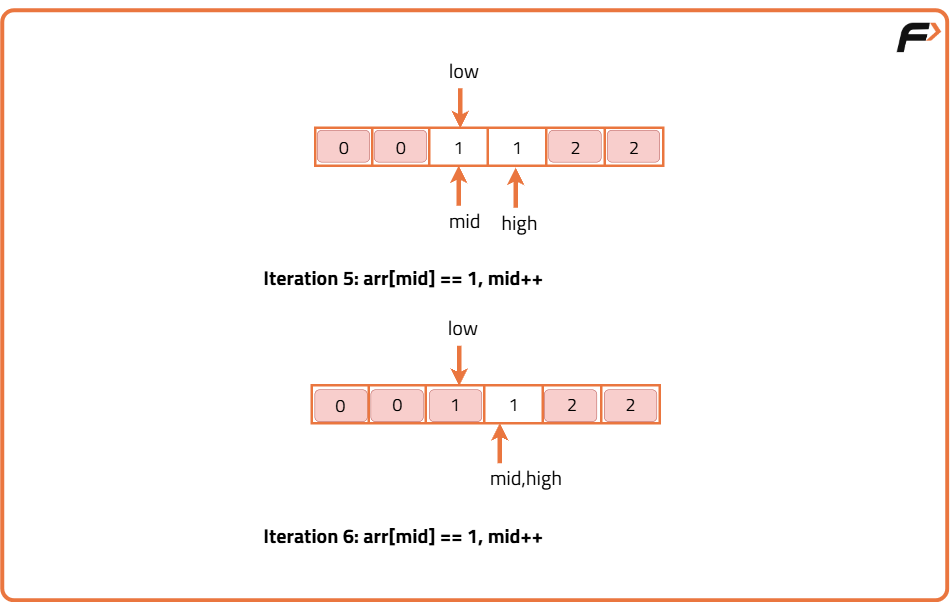
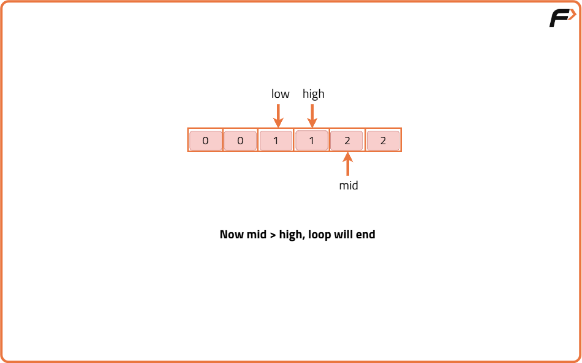

Sort an array of 0s, 1s and 2s
Problem Statement: Given an array nums consisting of only 0, 1, or 2. Sort the array in non-decreasing order. The sorting must be done in-place, without making a copy of the original array.
Examples
Input: nums = [1, 0, 2, 1, 0] Output: [0, 0, 1, 1, 2] Explanation: The nums array in sorted order has 2 zeroes, 2 ones and 1 two
Input: nums = [0, 0, 1, 1, 1] Output: [0, 0, 1, 1, 1] Explanation: The nums array in sorted order has 2 zeroes, 3 ones and zero twos.
Disclaimer: Here is the practice link to help you assess your knowledge better. It's highly recommend trying to solve it before looking at the solution.
Brute force Approach
Algorithm
- Initialize three counters to count the frequency of 0s, 1s, and 2s
- Loop through the array once and count each number
- In the second loop, fill the array based on the frequency of each number: first 0s, then 1s, then 2s
Code
#include <bits/stdc++.h>
using namespace std;
class Solution {
public:
// Function to sort the array containing only 0s, 1s and 2s
void sortZeroOneTwo(vector<int>& nums) {
// Initialize count variables for 0s, 1s, and 2s
int count0 = 0, count1 = 0, count2 = 0;
// Count the frequency of 0s, 1s, and 2s in the array
for(int i = 0; i < nums.size(); i++) {
if(nums[i] == 0) count0++;
else if(nums[i] == 1) count1++;
else count2++;
}
// Overwrite the array with the counted values
int index = 0;
// Fill with 0s
while(count0--) {
nums[index++] = 0;
}
// Fill with 1s
while(count1--) {
nums[index++] = 1;
}
// Fill with 2s
while(count2--) {
nums[index++] = 2;
}
}
};
// Driver code
int main() {
vector<int> nums = {1, 0, 2, 1, 0};
Solution obj;
obj.sortZeroOneTwo(nums);
for(int x : nums) {
cout << x << " ";
}
return 0;
}
Complexity Analysis
Time Complexity: O(n),We traverse the array twice: once to count, once to overwrite. Each operation is O(n).
Space Complexity: O(1), We use only a constant number of counters regardless of the input size. No extra array is used.
Better Approach
Algorithm
- Initialize three counters to zero: one each for 0s, 1s, and 2s.
- Traverse the entire array and increment the respective counter based on the element value.
- After counting, overwrite the array:
- Place all 0s first (based on count of 0s).
- Then all 1s (based on count of 1s).
- Then all 2s (based on count of 2s).
Code
#include <bits/stdc++.h>
using namespace std;
class Solution {
public:
// Function to sort an array containing only 0s, 1s, and 2s
void sortZeroOneTwo(vector<int>& nums) {
// Count of 0s, 1s, and 2s
int cnt0 = 0, cnt1 = 0, cnt2 = 0;
// First pass: Count the number of 0s, 1s, and 2s
for (int i = 0; i < nums.size(); i++) {
if (nums[i] == 0) cnt0++;
else if (nums[i] == 1) cnt1++;
else cnt2++;
}
// Second pass: Fill the array with 0s, then 1s, then 2s
// Fill the first 'cnt0' elements with 0
for (int i = 0; i < cnt0; i++) {
nums[i] = 0;
}
// Fill the next 'cnt1' elements with 1
for (int i = cnt0; i < cnt0 + cnt1; i++) {
nums[i] = 1;
}
// Fill the remaining elements with 2
for (int i = cnt0 + cnt1; i < nums.size(); i++) {
nums[i] = 2;
}
}
};
// Driver code
int main() {
vector<int> nums = {0, 2, 1, 2, 0, 1};
Solution sol;
sol.sortZeroOneTwo(nums);
cout << "After sorting:" << endl;
for (int i = 0; i < nums.size(); i++) {
cout << nums[i] << " ";
}
cout << endl;
return 0;
}
Complexity Analysis
Time Complexity:,O(n) We make two passes through the array: one for counting and one for updating. So the total time is proportional to the size of the array.
Space Complexity:O(1),Only three integer variables (cnt0, cnt1, cnt2) are used for counting. No extra space is used proportional to the input size.
Optimal Approach
Algorithm
We divide the array into three partitions using three pointers – low, mid, and high.
- From 0 to low-1, we’ll keep only 0s
- From low to mid-1, only 1s
- From high+1 to n-1, only 2
- If arr[mid] == 0, it belongs to the left section → swap with low, move both low and mid.
- If arr[mid] == 1, it’s already in the middle section → just move mid.
- If arr[mid] == 2, it belongs to the right section → swap with high, only move high.
- Start with three pointers at the beginning, middle, and end of the array.
- Iterate while the middle pointer is less than or equal to the end pointer.
- If the current element belongs to the front section:
- Swap it with the element at the front boundary.
- Move both front and middle boundaries forward.
- If the current element belongs to the middle section:
- Move the middle boundary forward.
- If the current element belongs to the end section:
- Swap it with the element at the end boundary.
- Move the end boundary backward.
- Repeat until all elements are in their correct zones.




Code
#include <bits/stdc++.h>
using namespace std;
class Solution {
public:
// Function to sort array containing 0s, 1s, and 2s using Dutch National Flag Algorithm
void sortZeroOneTwo(vector<int>& nums) {
// Initialize three pointers: low, mid starting from 0, high from end of array
int low = 0, mid = 0, high = nums.size() - 1;
// Process elements until mid pointer crosses high pointer
while (mid <= high) {
// If current element is 0, swap with low and move both pointers forward
if (nums[mid] == 0) {
swap(nums[mid], nums[low]);
mid++;
low++;
}
// If current element is 1, it's already in correct place → move mid forward
else if (nums[mid] == 1) {
mid++;
}
// If current element is 2, swap with high and move only high pointer backward
else {
swap(nums[mid], nums[high]);
high--;
}
}
}
};
// Driver code
int main() {
Solution obj;
vector<int> nums = {2, 0, 2, 1, 1, 0};
obj.sortZeroOneTwo(nums);
for (int val : nums)
cout << val << " ";
return 0;
}
Complexity Analysis
Time Complexity: O(n) The array is traversed only once using the `mid` pointer. Each element is checked at most once, and swaps are done in constant time.
Space Complexity: O(1) Only a few integer pointers (`low`, `mid`, `high`) are used. Sorting is done in-place, requiring no additional space.